A robot that clears
library desks
It patrols the reading room, works out which desks are free, flies a drone over each one, and sorts every object it finds into public property, personal property or waste.
The model on the right is our upper assembly, loaded from the same URDF we use in Isaac Sim. The demo takes a tag from one of the three slots at the side, raises the arm, turns to the front and sets the tag down. Drag to orbit, move the joints yourself, or explode the model into its six links.
6 links · 142,842 triangles
exported from SolidWorks
One pass through the reading room
The chassis decides where to go and the upper assembly decides what to do at each desk. A state machine hands control between them. The stamp on every stage says how far it has got.
Survey
Scan the floor with a 3D scanner and place three kinds of point: waypoints, operation points and observation points.
ChassisIn progressLocalise
Match live depth point clouds against the map and fuse the result with wheel odometry.
ChassisSimulatedCheck seats
At observation points, look for human legs beside each desk's legs. Occupied desks are skipped for the rest of the patrol.
ChassisIn progressTravel
Pick the next free desk from what was observed and drive there with Nav2.
ChassisIn progressInspect
Skip desks marked "reserved". Otherwise announce the take-off, launch the drone and photograph the desktop from above.
UpperIn progressClassify
Find every object, outline it with a four-point box and label it public, personal or waste.
UpperTestedAct
Plan a collision-free arm path to each object and place the matching tag.
UpperSimulatedTwo stacks, one state machine
Partly builtThe chassis stack decides where the robot goes; the upper stack decides what it does at each desk. The state machine in the middle runs the loop and hands control between them. Pick a state to see which modules it uses and what it passes on.
Upper assembly on a two-wheel base
CAD complete · chassis model to followThe upper assembly sits on a differential-drive base. A lift raises the arm, two yaw joints swing it over the desk, an aluminium tube telescopes outward, and a rack at the tip lowers the suction cup onto the object.

| Joint | Type | Moves | Range |
|---|---|---|---|
lift_slide | Prismatic | Lift platform up | 0 – 300 mm |
shoulder_yaw | Revolute | First arm link about +Z | 360° |
elbow_yaw | Revolute | Second arm link about +Z | 360° |
arm_extension | Prismatic | Telescoping tube outward | ±50 mm |
tool_rack_slide | Prismatic | End rack with suction cup | TBC* |
Ranges are measured from the exported assembly pose. Lift and yaw ranges are the design values; the URDF still carries smaller trial limits for first tests in Isaac Sim. Masses and inertias are estimated from geometry. *The URDF carries a ±15 mm trial limit; the full rack travel is still to be confirmed.
- Source
- SolidWorks assembly, exported to URDF with 6 visual meshes and 29 simplified collision meshes
- Envelope
- ≈ 0.57 × 0.50 × 0.61 m (upper assembly, zero pose)
- Frame
- Metres, Z up, origin at the bottom centre of the mounting plate
- End effector
- Rack driven directly by a pinion that travels with the telescoping stage
- Simulation
- Imports into Isaac Sim as a fixed-base asset for joint tests, or a floating base when mounted on the chassis USD
- On this page
- The hero model uses the visual meshes, welded at 0.5 mm, and the joint origins and axes from the URDF
Shoulder joint in section
The steel arm turns on a vertical shaft. A thrust bearing takes the arm's weight, a deep-groove bearing keeps the shaft true, and a timing pulley at the bottom brings in the drive.

- 1Steel armSquare steel section with a welded mounting disc
- 2FlangeSplit flange shaft support under the arm
- 3Shaft collarFixes the shaft axially
- 4Thrust ball bearingCarries the arm's weight so it turns freely in the horizontal plane
- 5Deep-groove ball bearingRadial support that keeps the shaft upright
- 6Timing pulleyBelt drive input from the stepper motor
- 7ShaftChrome-plated hardened steel shaft through the whole stack
- 83D-printed supportsEvery support layer is printed
- 9Aluminium plateBase of the support structure
From CAD to hardware
The lift, the arm and the end effector are built and moving by hand and on the bench.
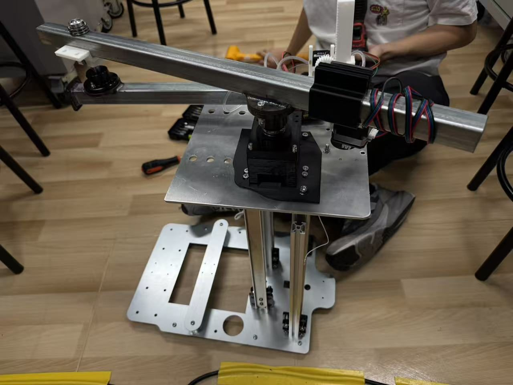


PC supervises, STM32 drives six actuator branches
Architecture fixedOne DC supply feeds the PC and every actuator branch. The STM32 turns PC commands into separate control channels and reads angle feedback back from both steppers and the servo.
Six actuator branches, four already under control
4 of 6 runningThe servo, the air pump and the solenoid valve all take standard servo-style PWM, so they share one multi-channel PWM board with a separate control pin per channel. The steppers get their own pulse firmware on the STM32F407.
| Actuator | Driven through | Control signal | Status |
|---|---|---|---|
| Feedback servo | Multi-channel PWM board | Standard servo PWM; position fed back to the STM32 | Controlled |
| Mini air pump | Kit MOSFET module (servo-style PWM input) on the PWM board | Standard servo PWM | Controlled |
| Solenoid valve | Kit MOSFET module (servo-style PWM input) on the PWM board | Standard servo PWM | Controlled |
| Stepper motor 1 | STM32F407 → ISS1-57 closed-loop driver | PUL / DIR pulses, firmware v1.1 | Bench-verified |
| Stepper motor 2 | STM32F407 → stepper driver 2 | PUL / DIR pulses | In development |
| Linear actuator | H-bridge | Direction and enable | Next semester |

Stepper 1 firmware: control that refuses to move by accident v1.1 flashed & read back
An STM32F407 board drives an ISS1-57 integrated closed-loop stepper through PUL/DIR. The PC talks to it over USB CDC with a line-based protocol, and nothing moves until an operator has confirmed the wiring, set a zero and armed the axis.
- Board
- Makerbase DRG ST-7, STM32F407VET6, 8 MHz crystal
- Pulses
- TIM1 on PA8 (open drain), direction on PB0; TIM5 for timing; acceleration and deceleration planned per move
- Link
- USB CDC, ASCII commands
ID CMD ARGS\n, newline-delimited JSON replies, protocol v1 - Watchdog
- Heartbeat every 200 ms; after about 1.2 s of silence the firmware stops pulsing and locks motion
- Scale
- 400 pulses per revolution, so a 90° move is 100 pulses
- Build
- 65,000 B flash · 28,416 B SRAM · arm-none-eabi-gcc 15.2.1
The PC side is a Tkinter control panel with a demo mode that simulates motion without hardware.
| Command | What it does |
|---|---|
PING | Heartbeat; returns status |
CONFIG | Pulses per rev, speed, acceleration, deceleration, direction |
ZERO | Declare the current position 0°; only while stopped and disarmed |
ARM | Allow motion; needs PPR, wiring check, zero and no faults |
MOVE / GOTO | Relative or absolute move in degrees |
STEPS / JOG | Exact pulse count, or continuous rotation |
STOP / HALT | Decelerate, or stop issuing pulses and lock |
Verified
Firmware written with ST-LINK and read back: all 65,000 bytes match the release binary. No-load forward and reverse jog confirmed on the bench at 400 PPR.
Tested in software
Pulse counting, angle quantisation, stop behaviour, heartbeat timeout, timer wrap-around, command parsing and a virtual-serial run where +90° gives exactly 100 pulses.
Still open
Pulse waveform on a scope, angle accuracy on the real axis, and encoder feedback. Replies report feedback_available: false until the encoder is wired in.
From one desk photo to a sorted list of objects
Tested on real desksThe robot never knows in advance what is on a desk, so detection is open-vocabulary. A missed object is invisible to the robot for good, while a wrong label can be fixed later. Recall comes first.
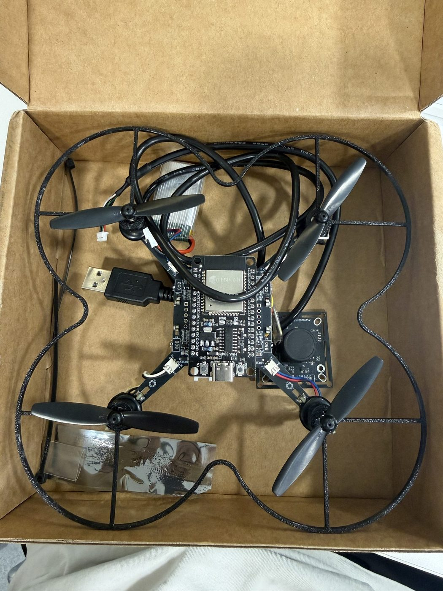
The camera will be a drone Flying · not yet integrated
A small quadcopter rides on the landing pad at the back of the robot. At each operation point it is meant to lift off, photograph the desktop from above and land again.
The drone already flies, and the recognition pipeline below already works, but they were tested separately: the desk photos on this page were not taken by the drone. Joining the two into one workflow is the next step.
Four layers of flight safety
- Prop guardsA frame encloses every propeller, so a blade cannot touch a hand, a book or a screen.
- Kill switchA separate receiver on the drone pairs with a handheld controller. One press on its kill switch cuts the motors at once.
- Spoken warningA speaker on the robot announces the take-off, for example "Drone taking off, please be careful", before the motors spin up.
- Strict launch ruleThe drone only flies when a desk has been confirmed to need tags: free of people and not reserved.


| Image | Candidates | Objects | bf16 | 4-bit |
|---|---|---|---|---|
| Validation desk | 6 | 4 | 13.0 s | 5.6 s |
| Full working desk | 10 | 8 | 12.2 s | 5.3 s |
| Cluttered desk | 10 | 7 | 11.2 s | 5.4 s |
Per image on an RTX 4060 laptop GPU (8 GB), after the models are loaded. The first image also pays about 10 s of loading.
The fix that mattered most
For a long time the four-point geometry was right but the language model still saw an axis-aligned crop, which pulled in the mouse next to the laptop. Feeding the perspective-corrected crop fixed the laptop, but applied everywhere it zoomed too far into small items like the bottle and the phone. The shipped rule uses four-point crops only above an area threshold.

The box also takes in the mouse beside the laptop.
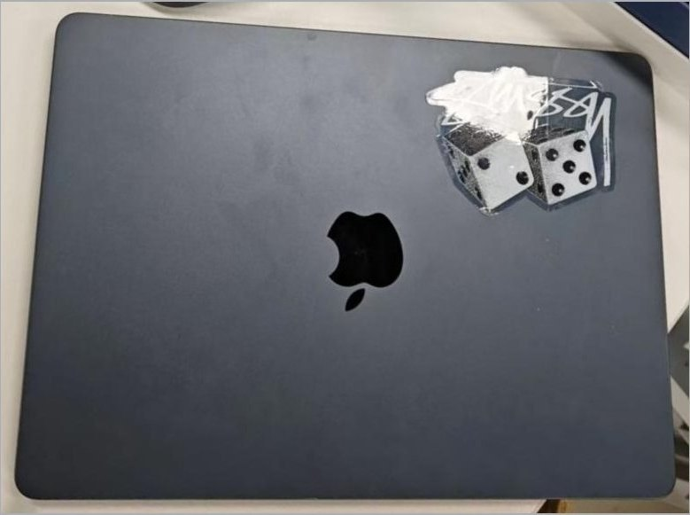
The perspective-corrected crop holds only the laptop.
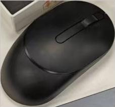
✓ correct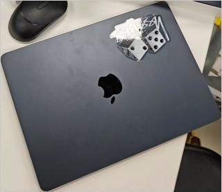
✓ correct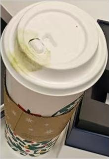
✓ correct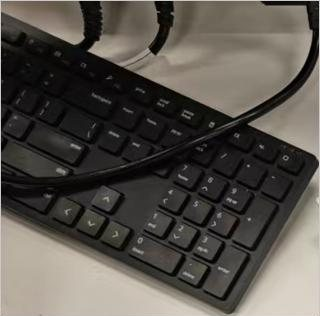
✓ correct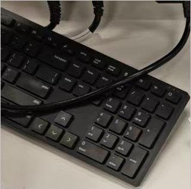
✗ wrong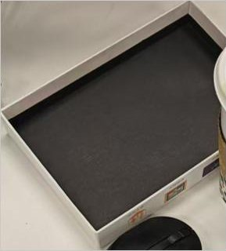
✗ wrong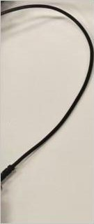
✗ wrong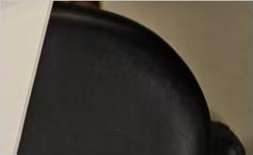
✓ correct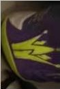
✗ wrongThe most useful diagnostic. All ten YOLO-World candidates for the full working desk, with detector confidence, marked against what is really in each crop. The four strongest boxes are all right; of the six below 0.5, only the chair is named correctly. That is why the pipeline keeps weak boxes for recall and lets the language model rename them.
Limits of a local VLM on onboard compute
- Model size is capped by memory. With 8 GB of GPU memory the recogniser is Qwen2.5-VL-3B, and only 4-bit quantisation brings it near 5 s per image. Larger, more accurate models do not fit.
- It is slow for a moving robot. 11–13 s per desk in bf16, about 5.5 s in 4-bit, plus about 10 s to load the model once. A patrol of many desks spends most of its time waiting on recognition.
- Small models still misread crops. In the final output for the full working desk, the empty box is labelled "mouse" and the chair at the edge "keyboard", both as public property.
- Context is lost in a crop. A tight crop hides what is around an object, and a loose one pulls in neighbours. The axis-aligned crop above turned a laptop into a mouse.
- What helps today: keep recall high and rename later, crop with four-point boxes only for large objects, and merge duplicates by rule.
- What we would try next: a larger model off-board when the network allows, fine-tuning on library desks, and re-checking low-confidence objects from a second drone photo.
Table calibration Prototype
Find the four table corners automatically (Canny edges and contour approximation) or by clicking, build a homography from the real table size, then map any pixel to tabletop X–Y coordinates and render a top-down view.
Three-view rectification Prototype
Rectify three camera views of the same table and compare the object coordinates each one reports. The homography core from the calibration tool is reused here.
Reach the object without touching anything else
SimulatedA simulator places random laptops, cups and books on an 1800 × 800 mm desk. Given a target point, it sizes the arm, solves the joints, checks for collisions and, if needed, moves the base first.
- Choose link lengthsL1 and L2 between 300 and 600 mm, the most compact pair that keeps the inner dead zone at or under 350 mm
- Check from the current base pose2R inverse kinematics within joint limits, then 3D collision checks against every obstacle
- If unreachable or blocked, re-plan the baseSample base poses, validate each one, keep the cheapest collision-free move and plan a detour
- Build the trajectoryInterpolate joints; the tip follows the top of whatever is underneath with 60 mm clearance, then descends
- ReportTop-down X–Y and side X–Z views, plus a step-by-step log of links, angles, waypoints and path
Four iterations in two days
Fixed base, three planning joints, text-only workspace and inverse-kinematics check.
2R arm on a mobile base: random desk objects, collision checks, base re-planning, top-down view.
Link lengths chosen automatically from the reach the task needs.
Object heights: 3D collision checks, the tip follows obstacle tops, side X–Z view added.
Stop for people, restart on its own
41 logic tests passA ROS 2 package on the onboard computer detects people with YOLO11n, measures how far away each one is from an Orbbec Astra Pro depth image, and gates every velocity command before it reaches the base.
Distance is the camera's optical-axis depth to the nearest valid point in each person box. Between 1.0 m and 1.5 m the base stays stopped, so it does not chatter at the threshold.
Fails safe
The base also stops if the camera stream drops, timestamps freeze or drift apart, depth alignment has not been confirmed, inference fails, or a person's box has under 50% valid depth or fewer than 9 valid points. If the person input goes quiet for 0.3 s, the supervisor outputs zero velocity.
When a person walks away the robot resumes by itself. Other faults need a manual reset. The 1.0 m and 1.5 m thresholds are defaults for offline validation and will be tuned to the robot's speed and braking distance.
| Topic | Role |
|---|---|
/cmd_vel_requested | Velocity from navigation or teleop |
/cmd_vel_safe | Checked velocity; the only input the base driver accepts |
/safety/input/person_clear | Person node's go / no-go |
/safety/status | Supervisor state |
/safety/reset | Manual reset service for non-person faults |
Knowing where it is: 4.5 cm error in simulation
Simulated · Isaac Sim + ROS 2Wheel odometry alone drifts. We correct it by matching what the depth camera sees against a prior 3D map of the room. Tested in Isaac Sim on ROS 2 Humble; the real camera comes next.
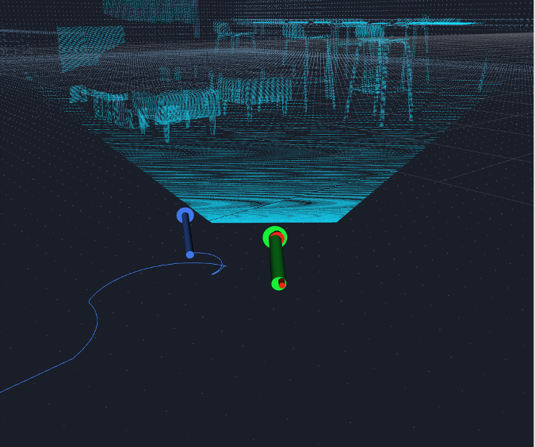
How the fusion works
- PredictWheel-encoder odometry from the differential-drive controller predicts where the robot is when each depth cloud arrives.
- MatchNDT registration aligns the cloud with a prior 3D map of the room (2 cm resolution, 11.4 million points), starting from that prediction.
- GuardA match is rejected if its fitness is above 0.003 m² or it would move the pose more than 8 cm or 3° from the prediction; odometry carries on alone until the next good match.
- Start upAt launch, a global BBS search proposes candidate poses on the map and NDT confirms one before tracking begins.
Built on open-source lidar_localization_ros2, ndt_omp and diff_drive_controller. Our work is the scene and sensor setup, filtering, guards, launch files and the evaluation.
Same recording, four estimates
665 depth clouds, 143 s of simulation, 0.68 m of travel and 22° of turning, replayed through each configuration from the same starting pose. Ground truth is used only to score.
Position error (XY RMSE) against simulator truth.
| Configuration | XY RMSE | XY max | Yaw RMSE |
|---|---|---|---|
| GICP matching | 33.24 cm | 56.80 cm | 3.27° |
| GICP + guards | 7.32 cm | 9.21 cm | 0.77° |
| NDT + guards | 4.50 cm | 5.74 cm | 0.13° |

What this does not prove yet
- One short route. 0.68 m and 22° of turning; long routes and full relocalisation after a loss are not tested.
- Simulation only. The camera model follows the Astra Pro datasheet; the real camera is next.
- No IMU, no dynamic filtering. Moved chairs and passing people are not filtered out of the depth cloud.
- Fitness is not error. A low score can still come from a wrong match on repeated furniture or large flat walls.
Still to build: chassis
- Occupancy by detecting human legs at observation points
- Route chosen from observations, driven with Nav2 through the safety gate
- Real hardware: the same localiser on the physical camera and wheels
Still to build: state machine
- States and transitions between patrol, observe, travel, inspect and act
- Hand-over to the upper stack at each operation point, and back when it is done
- Recovery after a safety stop or a failed grasp
What we ordered
Order sheet A06 · HK$Every purchased part on the group's order sheet, with quantities and prices in Hong Kong dollars. Printed parts and the drone are not on this sheet.
- Line items
- 36
- Order total
- HK$1,214.11
- Saved on structure
- HK$246.50 steel arms and connectors from one supplier for ¥100
| No. | Item | Qty | Unit (HK$) | Total (HK$) | Purpose |
|---|---|---|---|---|---|
| A1 | FEETECH FT90M 280° Metal-Gear Servo (Black, 2 kg) | 1 | 44.70 | 44.70 | Suction cup movement |
| A2 | H5M High-Torque Timing Pulley (15 mm Bore) | 1 | 13.94 | 13.94 | Power transmission |
| A3 | H5M High-Torque Timing Pulley (12 mm Bore) | 1 | 13.94 | 13.94 | Power transmission |
| A4 | STM32F407VET6 Minimum System Board | 1 | 46.10 | 46.10 | System control |
| A5 | H5M High-Torque Timing Pulley (8 mm Bore) | 2 | 11.06 | 22.12 | Power transmission |
| A6 | Shaft Collar (15 mm Bore) | 1 | 3.54 | 3.54 | Axial shaft retention |
| A7 | Shaft Collar (12 mm Bore) | 2 | 3.62 | 7.24 | Axial shaft retention |
| A8 | Split Flange Guide Shaft Support (15 mm Bore) | 1 | 17.77 | 17.77 | Shaft support and alignment |
| A9 | Split Flange Guide Shaft Support (12 mm Bore) | 1 | 17.15 | 17.15 | Shaft support and alignment |
| A10 | SKF Deep Groove Ball Bearing (12 mm Bore) | 1 | 9.36 | 9.36 | Low-friction shaft rotation |
| A11 | SKF Deep Groove Ball Bearing (15 mm Bore) | 1 | 12.11 | 12.11 | Low-friction shaft rotation |
| A12 | Tuba Brass Heat-Set Threaded Inserts | 50 | 0.15 | 7.50 | 3D-printed part fastening (MOQ: 50) |
| A13 | Internal Retaining Ring (32 mm) | 2 | 1.06 | 2.12 | Bearing retention |
| A14 | Internal Retaining Ring (29 mm) | 2 | 1.06 | 2.12 | Bearing retention |
| A15 | AS5600 Magnetic Encoder Module (Stepper Motor Version) | 1 | 87.44 | 87.44 | Position feedback |
| A16 | MG90S Servo (20T) Steering wheel | 1 | 7.06 | 7.06 | Servo gear connection |
| A17 | Thrust Ball Bearing | 1 | 3.68 | 3.68 | Axial load support |
| A18 | Thrust Ball Bearing (15 mm Bore) | 1 | 4.88 | 4.88 | Axial load support |
| A19 | Lvwei 57 mm Closed-Loop Stepper Motor with Integrated Driver | 1 | 164.67 | 164.67 | First arm actuation |
| A20 | Rubber Timing Belt (65 Teeth) | 1 | 5.87 | 5.87 | Power transmission |
| A21 | Rubber Timing Belt (192 Teeth) | 1 | 16.47 | 16.47 | Power transmission |
| A22 | Chrome-Plated Hardened Shaft (15 mm × 970 mm) | 1 | 22.35 | 22.35 | Shaft support |
| A23 | Chrome-Plated Hardened Shaft (12 mm × 950 mm) | 1 | 19.41 | 19.41 | Shaft support |
| A24 | H-Bridge Driver Board for Linear Actuator | 1 | 22.12 | 22.12 | Linear actuator control |
| A25 | Electric Linear Actuator | 1 | 125.90 | 125.90 | Upper platform lifting |
| A26 + A31 | Steel arm sections ×2 and lift-to-rail sheet-metal connectors ×4 (one supplier, ¥100) | 1 lot | 117.70 | 117.70 | Robotic arm structure and lift-to-rail connection |
| A27 | Stainless Steel Sheet Metal Slide Rail Bracket | 1 | 23.47 | 23.47 | — |
| A28 | Aluminium Extrusion Sliding Carriage | 4 | 22.35 | 89.40 | Guided sliding motion |
| A29 | Aluminium Extrusion Angle Bracket | 4 | 4.60 | 18.40 | Extrusion frame connection |
| A30 | Chrome-Plated Base Plate | 1 | 65.84 | 65.84 | — |
| A32 | Serial PWM Servo Module with External Power Input | 1 | 22.35 | 22.35 | Servo and pneumatic control |
| A33 | DC-DC Step-Down Voltage Regulator Module (5 V Output) | 1 | 14.70 | 14.70 | 5 V power supply |
| A34 | DC-DC Step-Down Voltage Regulator Module (12 V Output) | 1 | 14.70 | 14.70 | 12 V power supply |
| A35 | Wire Splicing Connector | 5 | 2.10 | 10.48 | Electrical connections |
| A36 | Lifting Platform Sheet Metal Component | 1 | 78.61 | 78.61 | — |
| A37 | Vacuum Pump Suction Cup Set | 1 | 58.90 | 58.90 | Vacuum pump, suction cup, solenoid valve |
| Total | 1,214.11 |
The A26 + A31 line replaces two quoted lines (HK$364.20) with one supplier's price of ¥100, converted at 1 CNY = HK$1.177 (Wise mid-market rate, November 2026).
How much of this AI did
Declared in fullWe used AI tools heavily throughout this project, from the first design sketches to the final code, and we want to be clear about where. Several different AI tools were involved.
A constant sparring partner
We kept exchanging ideas with AI while designing the system, and used it to keep refining the details of our design.
Most of the code was written by AI
To be frank, the large majority of the coding in this project was done by AI, across every software part of the robot and this page.
| Area | How AI was used | Share of the work done by AI |
|---|---|---|
| System and mechanical design | Discussion partner; refined details of our design | Discussion |
| Localisation | Wrote most of the code | Most of the code |
| Perception and VLM pipeline | Wrote most of the code | Most of the code |
| Embedded control | Wrote most of the firmware and control code | Most of the code |
| This website | Wrote most of the page | Most of the code |
Code and files
Everything is in the ICPROJECT2026 organisation on GitHub. Private repositories open for reviewers once they have been added as read-only collaborators.